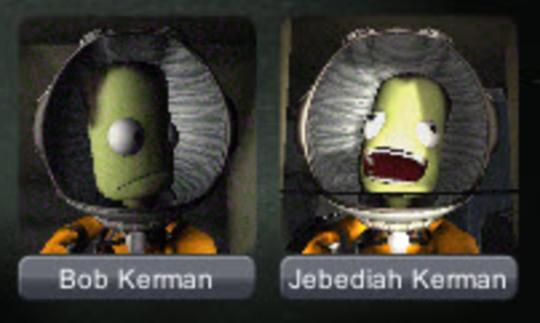
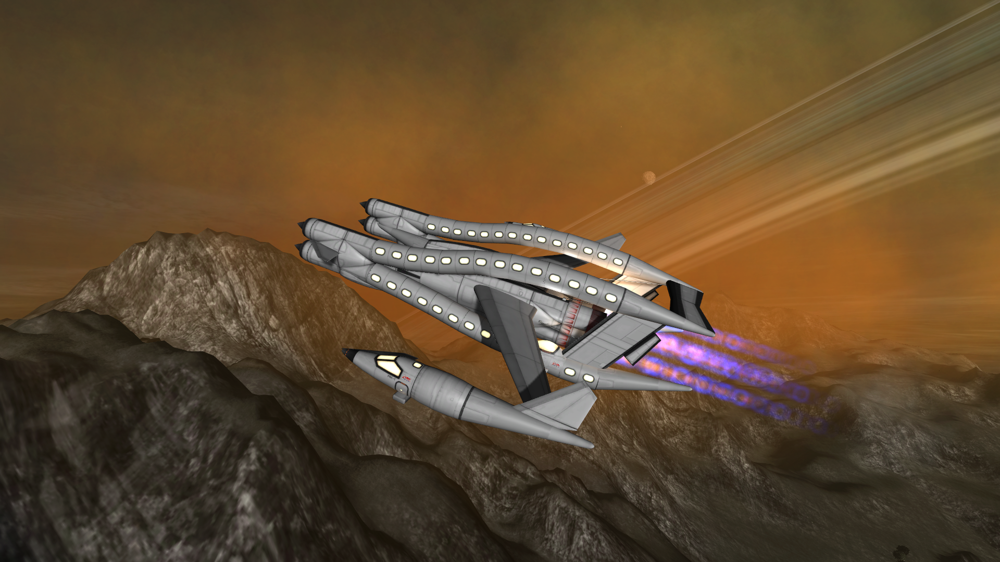
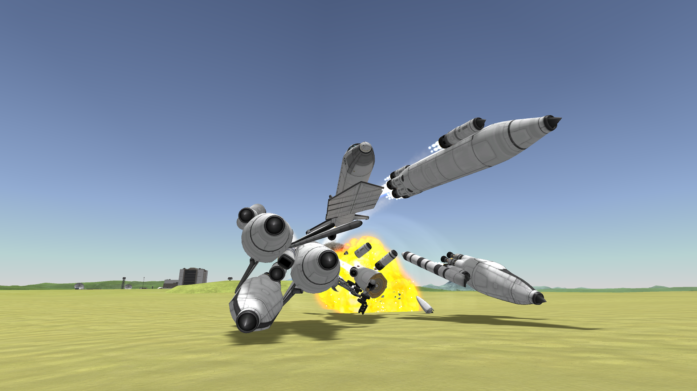

Robert Kerman olha assustado para Jebediah Kerman, que ri maliciosamente, enquanto ambos reentram a atmosfera de Kerbin a 13Km/s(47000Km/h).

A Nave USS Geringonça CLXXIX, voando junto à USS Engenhoca XCIV, entre as montanhas de Tekto, terceira lua de Sarnus.

Uma foto do momento exato em que ocorreu uma desmontagem não-planejada durante o voo de teste da USS Gambiarra CCLXXIII em 2025.